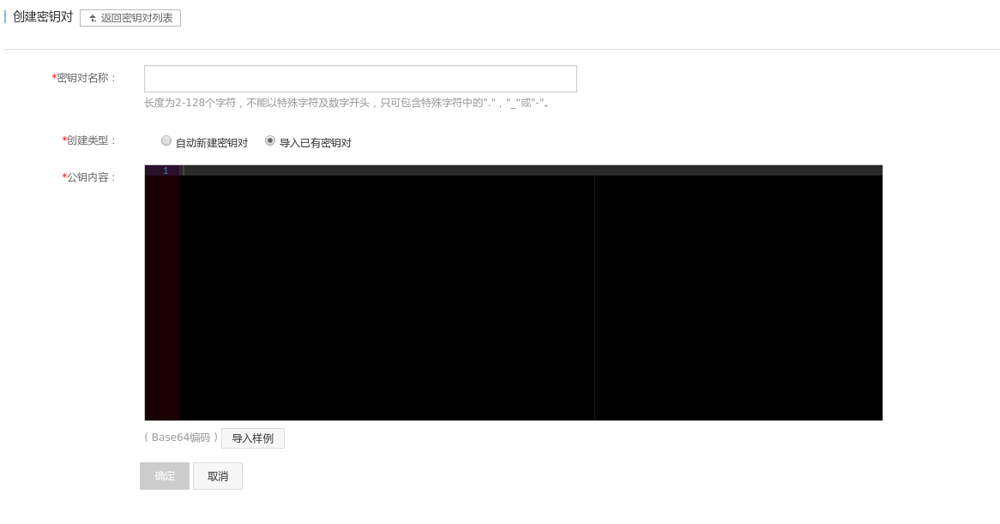

准备工作
在开始前， 还有些准备工作要做。 首先， 请确保你的阿里云账户余额大于 100元， 否则你将无法购买竞价实例。
配置 阿里云 access key
出于安全考虑, 本项目不会把阿里云的 Access ID 和 Access Key 保存到配置文件里去, 如果你不想要在每次创建/删除实例时手动输入密码, 可以将 access key设置在 ALIYUN_ACCESS_KEY_ID 和 ALIYUN_ACCESS_KEY_SECRET 两个环境变量里。
至于如何获取access key, 可以参考这篇教程: 如何获取Access ID和Access Key

创建安全组
阿里云的默认安全组规则只开放了 22 和 3389 端口访问。 为了通过公网访问 Jupyter Notebook, 至少还需要再开放一个端口， 本项目里 Notebook 使用的是 8888 端口。
你需要进入阿里云的管理控制台， 创建一个新的安全组， 然后添加一条入方向的安全规则 。 端口范围 为 8888/8888。 授权对象为 0.0.0.0/0。 具体步骤可以参考这个教程: 添加安全组规则
注意: 安全组是和阿里云的地域绑定的, 香港的 ECS 只能使用香港的安全组, 不能使用美国的安全组.

添加 SSH Key
你还需要在阿里云控制台导入你本机的 SSH 公钥(一般为 ~/.ssh/id_rsa.pub)。 具体步骤可以参考这个教程: 导入 SSH 密钥对
本项目的自动化脚本在创建实例时， 会选择你所指定的 SSH key。 实例创建完成后， 就能通过 ssh 登录到主机了。

添加 Git(SSH) Key
你需要在 playbook/tools/files/ 目录下添加一对 SSH 公私钥。 这对公钥主要是为了方便向 Github 上 push。
磁盘和快照
ECS 实例会自带一块系统盘和数据盘， 但这两块盘会随着ECS实例的删除而被同时释放。 为了持久化数据， 我采用的是再额外挂载一块数据盘的方式。 这块数据盘可以独立于ECS实例存在。 平时的操作都应在这块磁盘上进行（挂载在 /mnt/ml 目录下）。
当然， 你还可以把这块数据盘保存为快照来进一步节省费用。
运行 start_instance.py 时，在交互模式下， 你有3种选项可以选择:
1. 创建一块全新的数据盘(一般只有首次运行时， 才会用到)
2. 使用一块现有的数据盘(会列出你账户下所有的数据盘，供你选择)
3. 使用一个现有的磁盘快照来创建一个新的数据盘(会给出你的快照列表)
类似的， 在运行 delete_instance.py 销毁实例时， 你可以选择是否为当前的数据盘创建快照?
Jupyter Notebook
本项目默认的 Jupyter Notebook 端口为 8888。 为了安全， Notebook 只开放了通过 https 的方式来访问, 即 https://<公网 ip>:8888/。 由于 HTTPS 使用的是自签名证书， 首次访问时，浏览器会有相应的警告。
Jupyter Notebook 应当被配置为通过密码认证后才能访问。playbook/roles/libs/files/ 目录下有个 jupyter_notebook_config.py.example样例配置文件。 将这个文件重命名为 jupyter_notebook_config.py, 并替换其中的密码哈希即可。 你可以参考 Jupyter 文档 Preparing a hashed password 来设置你自己的哈希。注意，尽管 jupyter_notebook_config.py 里的密码是哈希过的， 你仍然应避免把它泄漏给其他人， 事实上， 本项目已经把 它加入到 .gitignore 中了。